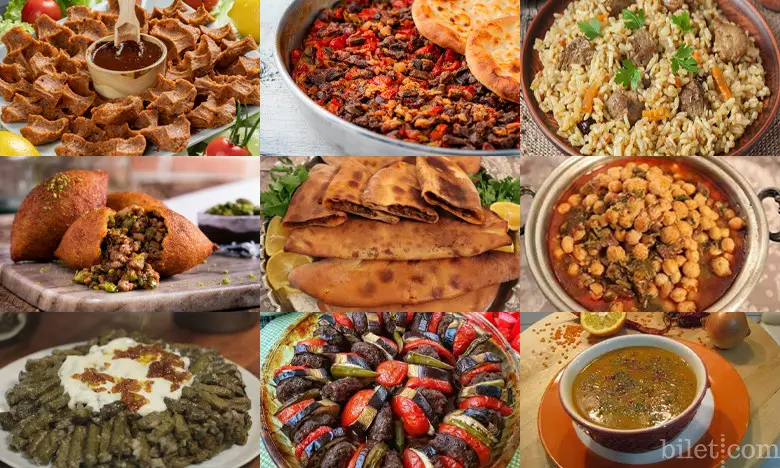
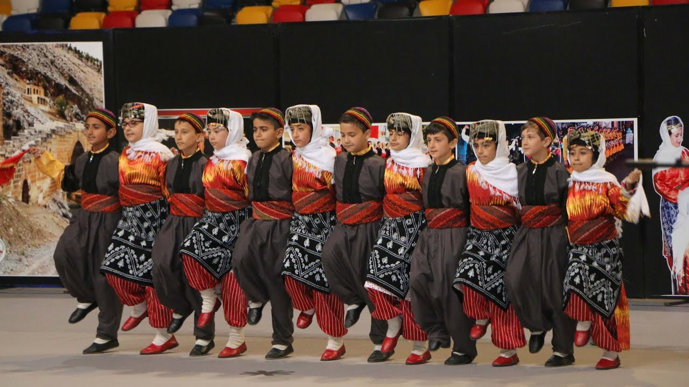
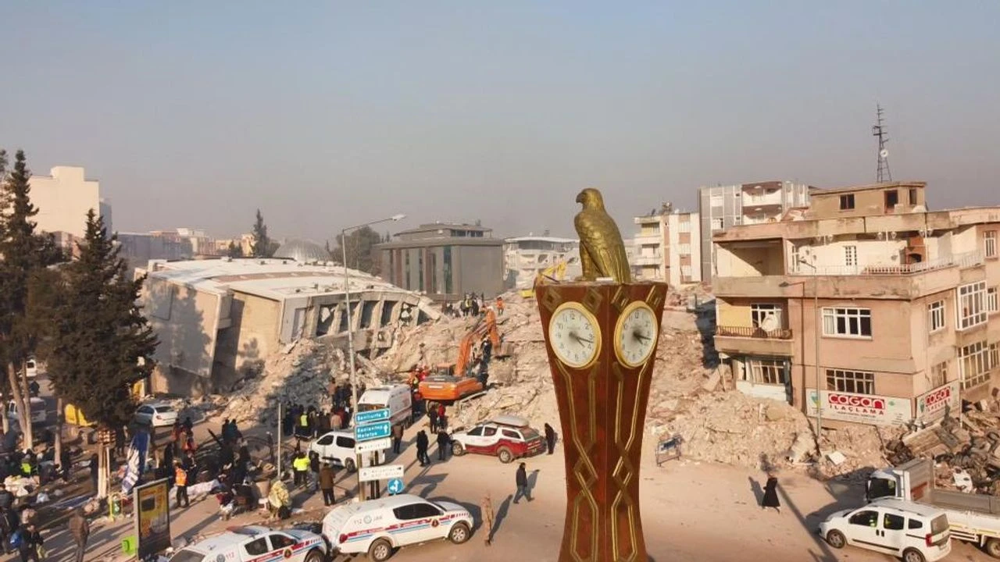

Mutfağımız
Güneydoğu Anadolu'nun lezzet deryası Adıyaman mutfağı, tarihi ve kültürel mirasıyla damaklarda unutulmaz izler bırakır. Bereketli toprakların sunduğu taze ürünlerle hazırlanan yöresel yemekler, geleneksel yöntemlerle pişirilir ve özenle sunulur. İşte, Adıyaman mutfağının eşsiz lezzetlerinden bazıları: 1. Kuzu Tandırı: Adıyaman mutfağının en ünlü lezzetlerinden biri olan kuzu tandırı, uzun saatler boyunca odun ateşinde pişirilerek hazırlanır. Taze kuzu eti, özel baharatlarla marine edilir ve ardından tandırda pişirilir. Sonuç, dışı çıtır çıtır, içi ise yumuşacık olan nefis bir lezzettir. Kuzu tandırı, Adıyaman sofralarının vazgeçilmezidir. 2. Çiğ Köfte: Adıyaman'da çiğ köfte, yöresel olarak çok sevilen bir atıştırmalık ve ana yemek olarak tüketilir. Bulgur, isot biberi, soğan, salça ve baharatlarla hazırlanan çiğ köfte harcı, limon ve marul ile servis edilir. Özellikle pikniklerde ve özel günlerde sıkça tercih edilen çiğ köfte, acı sevenler için de vazgeçilmez bir seçenektir. 3. İçli Köfte: Adıyaman mutfağının en sevilen mezelerinden biri olan içli köfte, bulgurun içine kıyma,soğan ve baharatlarla hazırlanan iç harcın sarılmasıyla yapılır. Daha sonra kızgın yağda kızartılan içli köfteler, çıtır dış kabuğuyla ve lezzetli iç harcıyla enfes bir tat sunar. 4. Lahmacun: Adıyaman'da geleneksel olarak yapılan lahmacunlar, ince hamurun üzerine kıymalı, baharatlı ve domatesli harcın yayılmasıyla hazırlanır. Ardından fırında pişirilen lahmacunlar, taze maydanoz, limon ve salatalıkla servis edilir. Lahmacun, Adıyamanlıların kahvaltı ve öğle yemeği sofralarının vazgeçilmez bir parçasıdır. Adıyaman mutfağı, taze ve doğal malzemelerin ustalıkla kullanılmasıyla kendine özgü bir lezzet dünyası sunar. Yöresel yemekler, geleneksel yöntemlerle hazırlanır ve Adıyamanlıların sofralarında özel bir yere sahiptir. Bu lezzet yolculuğunda, Adıyaman mutfağının eşsiz tatlarını denemek için şehri ziyaret etmek şarttır.
Kültürümüz
Güneydoğu Anadolu'nun mistik atmosferiyle buluşan, tarihi ve kültürel zenginlikleriyle göz kamaştıran bir şehir: Adıyaman. Fırat Nehri'nin kıyısında, tarihi İpek Yolu güzergahında yer alan bu şehir, binlerce yıllık geçmişiyle adeta bir açık hava müzesi gibidir. Adıyaman, tarih boyunca birçok medeniyete ev sahipliği yapmış ve bu medeniyetlerin izlerini taşıyan eşsiz bir kültürel mirasa sahiptir..Adıyaman'ın kültürel dokusu, binlerce yıllık tarihinin bir yansımasıdır. Şehirde düzenlenen festivaller, özellikle Bahar Şenlikleri ve Yaz Etkinlikleri, yerel kültürün renkli ve coşkulu bir şekilde kutlandığı etkinliklerdir.
Yüzyılın Felaketi
6 şubat 2023'te saat 04.17 meydana gelen 7.8'lik ilk deprem ile çok büyük zarar gören şehrimiz 2.darbeye saat 13.24'te meydana gelen 7.5'lik ikinci depremde aldı.Bu depremler çok büyük yıkama ve kayıba sebep oldu.Hem sevdiklerimizi hem de memleketimizi kaybetmiştik.Neye üzüleceğimize şaşırmıştık.Doğup büyüdüğümüz bir sürü anılarımızın olduğu memleketimizi kaybettiğimize mi üzülecektik yoksa o anıları beraber yaşadığımız sevdiklerimizi kaybettiğimize mi üzülecektik.Bir yandan da bu depremler bizimle beraber 10 şehri daha yerle bir etmişti.Bundan dolayı yardımlar bir hayli geç ulaştı ve bu da kayıpları daha da arttırdı.Hepsine tamam ama depremin ilk zamanlarında yayınlanan haberlerin hiç birinde Adıyaman'ın adının dahi geçmemesi işte bu hepsinden daha kötüydü.
